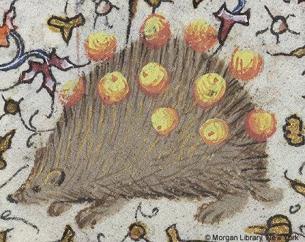

Misconceptions
Common Hedgehog Myths
Because hedgehogs are exotic pets, there is a lot of misinformation circulating about their care and biology. Some of these myths are harmless, but others can lead to serious health issues if followed by owners.
Our goal is to debunk these misconceptions using scientific facts and expert veterinary advice to ensure every "quill kid" lives a healthy, happy life.
Understanding the difference between pop-culture "hedgehogs" and the actual biological needs of the animal is the first step toward responsible ownership.

The Milk Myth
Misconception: Hedgehogs should be given a saucer of milk as a treat.
Fact: Hedgehogs are lactose intolerant. Dairy products cause severe digestive upset, diarrhea, and potentially fatal dehydration. Fresh water is the only liquid they need.
The Shooting Quills
Misconception: Like porcupines, hedgehogs can shoot their quills when threatened.
Fact: Neither porcupines nor hedgehogs can "shoot" quills. A hedgehog's quills are modified hairs that stay attached unless they are "quilling" (shedding) or sick. They protect themselves by rolling into a ball.
The Fruit Diet
Misconception: Hedgehogs mainly eat apples and berries like in children's books.
Fact: Hedgehogs are insectivores. While small amounts of fruit are okay as treats, their digestive systems are designed for high-protein insects and larvae, not high-sugar fruits.
Myth: They Are Low Maintenance
Many people think hedgehogs are as easy to care for as hamsters. In reality, they require a strictly controlled temperature environment (72-80°F), a specialized diet, and daily socialization to remain friendly.
Myth: They Are Social with Other Pets
While some hedgehogs are indifferent, they are solitary by nature and easily stressed. They should never be left alone with cats or dogs, as their quills can injure other pets, or they may become prey.